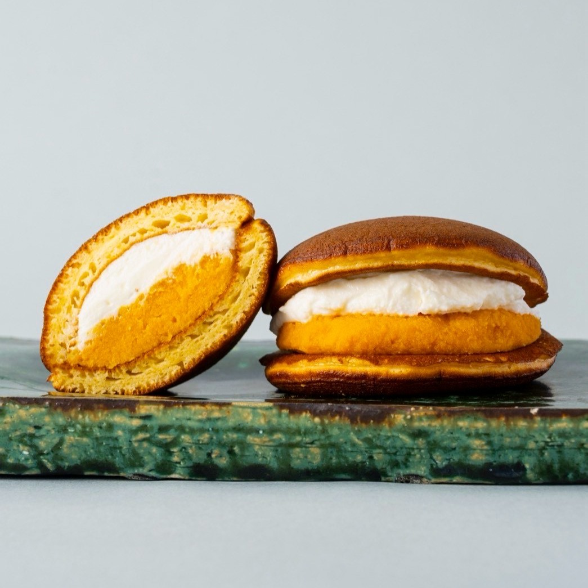

01
THE PLAN
10/11の旅の軸
出発
05:00
袋井・愛野周辺
袋井・愛野周辺
帰路へ
14:00ごろ
帰宅目標 17:30–19:30
帰宅目標 17:30–19:30
本命を残す
下田流・Comme’N
下田流を最優先
下田流を最優先
ベーグルを比較
タヌキ・ZONO
ZONOは12時前後・取り置き済み
ZONOは12時前後・取り置き済み
好みを引き継ぐ
生地の中のむっちり・もちもちを最優先。まずプレーンやフランス系で密度を比べ、惣菜・甘い系は少量。シナモン、強い酸味、草っぽい香りは優先しない。
丹青が基準etecoも高評価1個をシェア
元の旅からの変更
9/22の東京コースは未実施。初訪問の期待を残しつつ、火曜の旅程を日曜へ再編。和甘・大宮を省き、下田流 → タヌキ（勝どき）→ ZONO（蔵前）→ Comme’N（奥沢）へ。和甘は比較候補へ。取り置き済みのZONOは12時前後の受取を優先する。
通常営業 ≠ 10/11の営業確定 ≠ 在庫確保
既存店と駐車場は10/5〜10/6、タヌキの通常営業・駐車料金と今回の旅程は10/10に確認・更新。ZONOはご本人から取り置き済み・12時前後訪問と確認。他店の個別営業・商品在庫は別に表示。交通の時刻幅は計画上の目安で、道路検索の確定値ではありません。
TIMELINE
下田流を最優先に、東京のパン4店へ
01 · 08:30下田流最優先
02 · 10:00タヌキ残っている商品から
03 · 12:00前後ZONO BAGEL取り置き済み・受取優先
04 · 13:20Comme’N14:00ごろ 帰路へ
時刻は渋滞・行列を含めた計画の目標。タヌキは10時到着で全種類を選べる前提にはせず、購入まで30分を超えそうなら見送ります。ZONOは取り置き済みのため12時前後の受取を軸にします。
02
03
08:30–09:10MUST
下田流で最優先の購入
あんバターとフランス系を最初に。下田流を最優先とし、列で遅れたらタヌキの到着と在庫への期待を調整する。
04
09:10–10:00MOVE
下田流から勝どきへ
車移動・駐車を含め約50分の計画枠。7日検索では車約32分だったが、10/11の予測値ではない。タヌキは10時前後到着で、全種類を選べる前提にはしない。
05
10:00–10:35BAGEL
タヌキアペタイジング
当日残っているプレーン・米粉系や好みのサンドから少量を選ぶ。行列から購入まで30分を超えそうなら、駐車予算と帰路の余白を優先して見送り。入庫35分で車へ戻り、40分以内に出庫。
06
07
11:15–11:50BUFFER
早着分は休憩・受取準備へ
ZONOは12時前後に訪問・取り置き済み。余白を休憩に使い、11:50ごろから店へ向かう。ここに追加店を詰めず、駐車・トイレ・道路の遅れを吸収する。
08
12:00前後–12:20PICKUP
ZONO BAGELの取り置きを受取
取り置き済み（ご本人確認）。12時前後の訪問予定を優先。予約した商品・数量・返信を確認し、遅れそうなら店の連絡方法・変更条件に従う。店頭の追加購入は在庫次第。
09
10
13:20–13:50BREAD
Comme’N TOKYO 本店
サンドとパン・ドゥを優先。購入パンをシェアし、冷蔵サンドは保冷。14時ごろの帰路開始を目標に、購入は30分枠。ZONOの受取が遅れたら滞在・購入量を調整する。
11
BAKERY & SWEETS
下田流・タヌキ・ZONO・Comme’N


最優先10/11個別営業・在庫未確認
下田流
2024年のパンタスティック静岡で刺さった、あんバターフランスの中のむっちり・もちもち。今回もここに最初の時間と購入枠を使う。東京コースはまだ未実施なので、元の期待をそのまま持って初訪問へ。
まず買いたいもの
- 至高のあんバターサンドフランス — 当日あれば最初に
- フランス系・ロデヴ系 — 中の密度と水分を比較
- 生食パンまたは当日の高加水パン — 量に余裕があれば
10/11の確認レベル
- 通常の日曜営業情報あり。10/11の個別営業告知は未確認
- 公式Instagramは今回取得できず、前夜と当日朝に確認が必要
- 8時台到着目標。7:30の開店待ちのための早出はしない
- あんバターが無くても生地中心に選ぶ。現金を用意
今回採用日曜通常営業／10/11個別告知・在庫未確認
TANUKI APPETIZING
和甘・大宮を省いた分を、勝どきのベーグル比較へ。下田流の後なので10時前後到着が目安。品揃え重視なら8時台〜9時までに並ぶ案が望ましいが、今回は下田流を優先し、残っている商品から選ぶ。
買いたいものと在庫の扱い
- プレーン・米粉系など、当日残っている生地比較用を1個
- サンドはシナモン・強い酸味・草っぽい香りを避けて少量
- 生地・サンドの種類と価格は当日の掲示を正とする
- 購入済みのパンをシェア。冷蔵サンドは保冷する
品揃え・行列の条件
- 通常営業は10/10に公式プロフィールで確認
- 10/11の個別投稿本文は取得できず、営業確定とは扱わない
- 2026年2月に日曜9時で全種類が残った報告あり。10時以降の全種類は保証しない
- 取り置きは未確認。予約不可の外部情報があるため、確保済みの前提にはしない
- 購入まで30分超の見込みなら見送り。入庫から40分以内に出庫

取り置き済み12時前後訪問・取り置き済み（ご本人確認）
ZONO BAGEL
公式が打ち出す「もちもち、むぎゅっ」が今回の好みに合う。前回は火曜通常休で外していたが、10/11は日曜。タヌキの後、奥沢の前に組み込み、生地を比較する。
まず買いたいもの
- 取り置きした商品・数量を返信で確認して受取
- 追加するなら甘い系を少量。シナモンは避ける
- 写真はブランド参考。取り置き内容は返信を正とし、追加購入は店頭在庫次第
取り置きと時間の条件
- 公式InstagramはDMで取り置き受付を案内
- ご本人から取り置き済みと確認。12時前後に訪問予定
- 受取を優先。遅れそうなら店の返信に記載された連絡・変更条件に従う


本命を維持通常営業確認・当日在庫未確認
Comme’N TOKYO 本店
元から行きたかった本店を残す。和甘・大宮を省いた分、移動と駐車に余白を使い、サンドと生地の比較を楽しむ。
買う順番
- たまご明太サンド — 入店直後に在庫を確認
- パン・ドゥ — しっとり・もち方向の比較
- パン・ド・ミ — 食パンを持ち帰る余裕があれば
- カンパーニュ — 酸味を確認し少量から
奥沢での過ごし方
- 通常営業は公式で確認。10/11の個別在庫は未確認
- 13:20前後の訪問を目標。サンドの売切れ時はパン・ドゥへ
- 昼食分は購入パンをシェア。冷蔵商品の扱いは店頭案内を優先
- ZONOを訪問した日は、この後の追加店を入れず帰路へ
PARKING · WRX S4
停める場所まで決めておく
1店舗 約1,000円まで・片道徒歩5分以内
往復徒歩・買い物・列待ちを含む駐車時間で計算。税込の通常料金で、店舗の割引は使わない前提。予備候補がある店はそちらへ。ZONOは取り置き受取を優先。満車のPを何度も回るより、任意店を省いて帰路の余白を守る。
予定4店：タヌキ40分・他店60分の料金例合計 約2,700円下田流440＋タヌキ800＋ZONO800＋Comme’N660
ZONOも40分なら合計約2,500円。各店の時間条件を優先。
ZONOも40分なら合計約2,500円。各店の時間条件を優先。
徒歩は既存P10/6、タヌキP10/7のGoogle Maps経路の目安。車室から出口、踏切待ち、入場券購入、混雑による増加は別途。出庫時刻は課金の境界より数分早めに。
WRX S4の条件・今回除外したP
全幅1.9m以上の受入条件を優先。タヌキの候補は全幅2mまでの平地・自走式。WRX S4の代表的な現行仕様は全長4.670m・全幅1.825m・全高1.465m、最低地上高135mm。年式・車高変更・エアロは未確認なので、実車と現地制限を優先。
最低地上高150mm以上が条件のNPC24H高島平7丁目は除外。狭い機械式や徒歩5分を超える候補も採用しない。平置きでも段差・フラップとの接触がないか入庫時に確認。
SUBARU主要諸元 最低地上高の参考仕様 NPCの車両条件下田流
タイムズ高島平第14
板橋区高島平7-20
40分 ¥220・60〜80分 ¥440店舗まで徒歩 2分 / 130m
- 料金
- 08:00–22:00：40分220円 / 駐車後24時間最大700円
- 営業・台数
- 3台 / 24時間
- 車両制限
- 全長5m・全幅1.9m・全高2.1m・重量2.5t
列が長くなっても最大700円。小規模なので入庫前に満空を確認。
タイムズ高島平第8
板橋区高島平7-11
40分 ¥220・60〜80分 ¥440店舗まで徒歩 4分 / 300m
- 料金
- 終日40分220円 / 駐車後24時間最大1,100円
- 営業・台数
- 6台 / 24時間
- 車両制限
- 全長5m・全幅1.9m・全高2.1m・重量2.5t
短時間用。最大料金は予算を超えるため、160分（880円）以内を目安に出庫。
タヌキアペタイジング〈勝どき〉
シスコンパーク勝どき
中央区勝どき4-3
日祝20分 ¥400・40分 ¥800店舗まで徒歩 1分 / 41m
- 料金
- 日祝：終日20分400円 / 6:00–18:00最大2,000円
- 営業・台数
- 24時間 / 33台 / 平地・自走
- 車両制限
- 全長5m・全幅2m・全高2.3m・重量2.5t
徒歩往復・行列・購入を含め40分以内で800円。40分を超えると1,200円になり予算超過。入庫35分で車に戻る。列が長く、30分以内に購入できる見込みがない場合は入庫前に訪問を見送る。最大2,000円は今回の予算を超えるため長時間利用しない。
リアルタイム満空は掲載なし。料金は10/10にs-parkで確認した掲載値。過去の「15分100円」の情報とは相違があり、安い旧料金は使わない。入口の現地料金・区画・車両条件を必ず確認。
ZONO BAGEL〈蔵前〉
Comme’N TOKYO 本店
タイムズ九品仏駅前第4
世田谷区奥沢8-30
40分 ¥440・60分 ¥660店舗まで徒歩 4分 / 280m
- 料金
- 終日20分220円 / 駐車後24時間最大1,600円
- 営業・台数
- 7台 / 24時間
- 車両制限
- 全長5m・全幅1.9m・全高2.1m・重量2.5t
徒歩は踏切を通る。待ち時間は別途。80分880円まで、80分を超えると1,100円。
タイムズ奥沢第12
世田谷区奥沢6-11
40分 ¥440・60分 ¥660店舗まで徒歩 3分 / 220m
- 料金
- 08:00–22:00：20分220円 / 駐車後24時間最大1,600円
- 営業・台数
- 5台 / 24時間
- 車両制限
- 全長5m・全幅1.9m・全高2.1m・重量2.5t
80分880円以内を目安。Kepoへは別のPに移動し、ここに停めて徒歩でまとめない。
和甘 エキュート大宮〈タヌキとの入替候補〉
JACK大宮自動車駐車場〈平面区画〉
大宮区錦町682-2
45分 ¥300・60分 ¥400店舗まで徒歩 5分 / 350m
- 料金
- 15分100円 / 24時間最大2,500円
- 営業・台数
- 平面32台（うち身障者用2台）/ 7:00–23:00
- 車両制限
- 全長5m・全幅1.9m・全高2.1m
地下1階の自走式・平面区画を選ぶ。機械式には入れない。大栄橋西交差点から駅屋上Pとの共通進入路を通り、JACK地下入口へ。徒歩は地上出口からの目安で、車室・エレベーター・入場券購入には別途余白を確保。150分で1,000円。
リアルタイムの平面区画の満空リンクは確認できず。料金・寸法・平面32台は10/10に公社公式で再確認。徒歩は10/6の経路確認値。現地の案内を確認。Web上の「定期の空き」は当日の時間貸の空きとは別。
Kepobagels 洗足店〈Comme’Nの入替候補〉
タイムズ洗足2丁目第2
目黒区洗足2-16
20分 ¥220・40分 ¥440店舗まで徒歩 5分 / 350m
- 料金
- 終日20分220円 / 駐車後24時間最大1,000円
- 営業・台数
- 7台 / 24時間
- 車両制限
- 全長5m・全幅1.9m・全高2.1m・重量2.5t
購入＋往復徒歩を含め30〜40分を見込む。最大料金も予算内。
タイムズ東急ストア洗足店
大田区北千束2-1
40分 ¥660・60分 ¥990店舗まで徒歩 2分 / 140m
- 料金
- 終日20分330円 / 最大料金なし
- 営業・台数
- 12台 / 24時間
- 車両制限
- 全長5m・全幅1.9m・全高2.1m・重量2.5t
60分以内に出庫。60分を超えると1,320円。Kepo購入による駐車割引は見込まない。
HIGU BAGEL & CAFE〈下田流の代替〉
満空リンクは運営会社の更新時点の情報。到着時の空車を保証するものではありません。予約サイトに掲載される時間貸Pと、予約専用区画は別です。近隣の予約候補も調査しましたが、今回は徒歩・車両条件が確認できる時間貸を採用。予約する場合は10/11の総額・区画寸法・徒歩経路を確認してから確保してください。
ALTERNATIVES
比較候補と、組み込むなら何時か
和甘を写真付きで比較候補に残しました。採用済みの下田流・タヌキ・ZONO・Comme’Nは店舗欄で確認できます。候補は各カードの時間帯に1店を入れ替える想定。ZONOは12時前後の訪問・取り置き済みを優先し、5店目の追加は基本日程に含めません。

赤坂おぎ乃 和甘 エキュート大宮
前回の本命を比較候補に移す。10月は南瓜マスカルポーネ（公式670円）と定番のあずきが比較対象。公式商品ページで10/1〜10/31の受取期間と冷蔵条件を10/10に再確認。パン生地とは別に、生どらやきの甘味枠として残す。
10/11分の公式注文締切は10/9 23:59で経過済み。未予約で切り替えるなら店頭在庫次第。南瓜の確保は保証しない。入場券等と保冷を準備し、取り置き済みのZONOを省く前提にはしない。

Kepobagels 洗足店
国産小麦と麹由来天然酵母。酵母6%・10%の生地差を比べたい候補。運営会社は洗足店8:00–19:00を案内。10/11の個別営業と支店の商品在庫は直前確認。
ZONOの取り置きは維持。生地比較をベーグルへ寄せたい場合の午後枠。徒歩5分・1,000円以内の候補Pを掲載済み。

HIGU BAGEL & CAFE
湯だね＋石臼挽き粉のもちもち・ずっしり系。公式の土日通常9:00–18:00を10/10に再確認。プレーンで生地を比較する。10/11の個別営業・在庫は未確認。奥沢の後に板橋へ戻らない。
下田流を訪問できる日は追加しない。KENと比較して北側は1店。候補Pは徒歩3分・60分440円。

TSUBASA COFFEE
昔のメモのプリン・カフェ枠。公式は通常9:00開店〜17:30L.O.、不定休。10/10に再確認した通常案内で、10/11の個別営業と季節メニューは直前確認。パン生地の比較とは役割が違う。
カフェを優先する場合にタヌキと入れ替える。駐車場は未選定。徒歩5分・1,000円以内のPと待ち時間を確認できた場合だけ採用。

Ryumon Coffee Stand
昔のメモではティラミスが目的。公式の通常9:00–18:30、L.O.18:00、水曜・第1第3火曜休を10/10に確認。10/11の個別営業、ティラミスの現行販売と在庫は未確認。
今回は採用時刻を置かず別日に残す。席予約不可・駐車場なしの公式案内あり。徒歩5分・1,000円以内の周辺Pは未選定。

BOULANGERIE KEN〈下赤塚店〉
公式が重みのあるハード系と高密度でもちもちの生地を紹介。下赤塚2-2-17。店舗欄9:00–19:00・月木休は10/6の確認値で、10/11の個別営業・当日在庫は直前確認。週末のバゲットも生地比較の候補。
駐車場は未選定。徒歩5分・1,000円以内のPを確認してから採用。下田流を訪問できる日の追加にはしない。

MARUICHI BAGEL〈新橋〉
北海道小麦・酵母・岩塩・麦芽・水のプレーン（公式370円）で、生地の密度と噛みごたえを比較。新橋5-23-10。通常水〜日7:00–15:00、月火休を10/10に再確認。10/11の個別営業・在庫は未確認。
取り置き済みのZONOは維持し、タヌキと入れ替える。駐車場は未選定。徒歩5分・1,000円以内のPを確認できた場合だけ採用。
ROUTE DECISIONS
予定が変わったら、ここで判断
ZONOは12時前後・取り置き済み
ご本人から取り置き済みと確認。受取を旅程の軸にし、遅れそうでも自動で省略しない。返信の受取時刻・連絡方法・変更条件に従う。
先にタヌキや任意候補の滞在を調整。Comme’Nは13:20–13:50が目標。
タヌキの行列・売り切れに出会ったら
10時前後の到着は全種類を選ぶには遅め。残っている商品で満足できるか、購入まで30分以内が見込めるかを入庫前に判断。
無理なら下田流 → ZONO12時前後 → Comme’N。入庫した場合は35分で戻り40分以内に出庫する。
候補と入れ替える場合
和甘・MARUICHI・TSUBASAはタヌキとの入替、HIGU・KENは下田流との入替、KepoはComme’Nとの入替。Ryumonは別日へ。
基本ルートは4店のまま。比較欄のおすすめ時刻・駐車条件を使い、取り置き済みのZONOを維持する。
遅れ・買いすぎ・疲れが出たら
ZONOの返信に沿って受取を扱い、ほかの店の滞在・購入量を調整。Comme’Nまで無理に詰めず、必要な休憩を確保。
14時ごろ帰路を目標。道路状況による帰宅時刻のずれは休憩を削って取り戻さない。
PRE-FLIGHT
明日の営業と出発準備
下田流・タヌキ・ZONOの個別告知ZONOは取り置き返信も保存。通常営業と当日告知を分けて確認。
道路・規制・休憩を確認05:00出発。4店の順番を維持。
行列と駐車の40分制限タヌキの品揃えに過度な期待を置かない。
SOURCES
情報の確認先
和甘：10月商品・受付締切・冷蔵条件和甘P：公社の平面区画・料金TSUBASA：通常9時開店・不定休Ryumon：通常営業・定休日・席予約不可タヌキ：公式の住所・写真タヌキ：通常木・日7時〜売り切れタヌキP：駐車場公社の料金・寸法タヌキ：日曜9時の品揃え報告ZONO：公式の住所・生地の特徴ZONO：営業曜日・時間・DM取り置きZONO駐車場：タイムズ蔵前4丁目の日曜料金・満空KEN：現行メニュー・下赤塚店情報MARUICHI：新橋への移転・通常営業MARUICHI：プレーンの材料・価格駐車場の追記形式：参考ページKepo自由が丘店の閉店・洗足店継続の報道Kepo洗足店：住所・営業時間の相違確認元の東京コース（9/22案）下田流：公式Instagram（今回の取得不可・直前確認先）下田流：2025年7月の日本テレビ紹介・通常営業の参考下田流：現在の外部店舗情報（個別営業の保証ではない）maru：営業曜日・公式商品maru：臨時営業の確認先Comme’N：通常営業・住所Comme’N：現行メニューKepo：運営会社の支店営業情報Kepo：ブランドの生地・商品比較HIGU：公式の土日営業時間・駐車場案内NEXCO：東名リニューアル工事NEXCO：渋滞予測カレンダーNEXCO：10/10〜12の休日割引対象外表示iHighway：当日の道路状況
v1.4.0：10/10更新。ZONOの取り置き済み・12時前後訪問はご本人の連絡に基づき反映。商品・数量・具体的な受取条件は返信を優先。他店の個別営業・在庫は別に確認。比較候補の時刻は今回の動線に合わせた提案で、10/11の確定所要時間や在庫の保証ではありません。和甘の商品・締切とJACKの料金・寸法、HIGU・Kepo・TSUBASA・Ryumon・MARUICHIの通常案内は10/10再確認、KENの店舗営業時間は10/6の確認値。その他既存店・駐車場は10/5〜10/6、タヌキは10/10確認。新たな予約・注文・店舗への連絡は実行していません。写真には出典を併記。和甘の南瓜写真は公式ページで確認した画像を表示用に保存し、その他は外部から読み込んでいます。